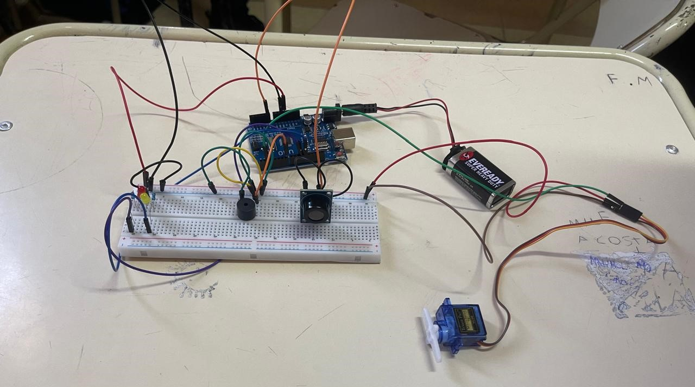
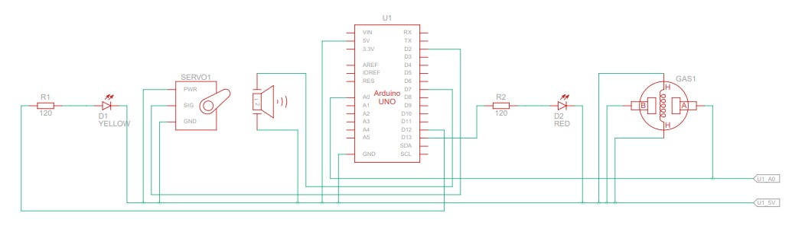

Introducción
La acumulación de gases nocivos como el dióxido de carbono (CO2) en espacios cerrados puede ser perjudicial para la salud. Este proyecto propone una solución automatizada: un sistema que monitorea constantemente la calidad del aire y acciona un mecanismo que simula la apertura de una ventana para ventilar el ambiente cuando los niveles son peligrosos.

¿Qué problema resuelve?
Evita la intoxicación por gases y mantiene el aire fresco automáticamente, emitiendo alertas visuales y sonoras.
Lista de Materiales
- Arduino Uno R3
- Sensor de Gas MQ-7
- Servomotor SG90
- Piezo Buzzer
- LED Rojo
- LED Amarillo
- Resistencias y Cables
Esquema de Conexiones
Conexión de pines:
- Sensor MQ-7 → A0
- Servomotor → D2
- Zumbador → D7
- LED Amarillo → D12
- LED Rojo → D13

Código Fuente
#include
Servo Servo1;
int gas;
int piezo = 7;
int ledr = 13;
int leda = 12;
void setup(){
Serial.begin(9600);
Servo1.attach(2);
pinMode(leda, OUTPUT);
pinMode(ledr, OUTPUT);
pinMode(piezo, OUTPUT);
}
void loop(){
gas = analogRead(A0);
if(gas >= 550){ digitalWrite(leda,LOW);
digitalWrite(ledr,HIGH); delay(100);
digitalWrite(ledr,LOW); delay(100);
Servo1.write(110);
tone(piezo,525); delay(150); noTone(piezo);
delay(500);
}
else if(gas >= 400){ digitalWrite(leda,HIGH);
digitalWrite(ledr,LOW);
Servo1.write(55); delay(500);
}
else if(gas > 300){ digitalWrite(leda,LOW);
digitalWrite(ledr,LOW);
Servo1.write(25); delay(500);
}
else{ digitalWrite(leda,LOW);
digitalWrite(ledr,LOW);
Servo1.write(0);
}
Serial.println(gas);
delay(200);
} Manual de Usuario
- Estado Normal: ventana cerrada, sin luces.
- Baja concentración: ventana abre 25°.
- Media: LED amarillo y apertura a 55°.
- Emergencia: LED rojo parpadea, alarma y apertura total.